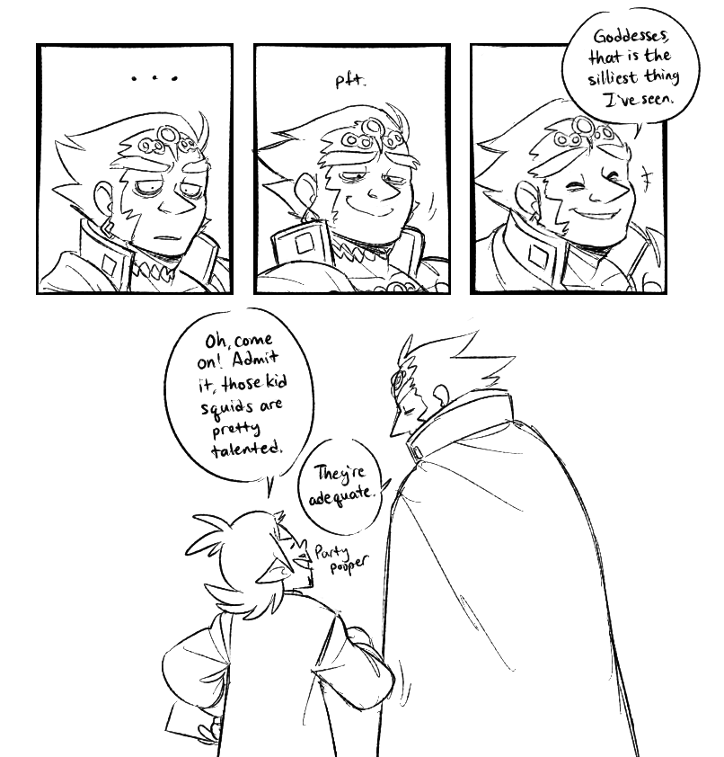

A sleep-dededeprived king. but hey, at least he got a cool outfit!Character: King Dedede (gijinka, Kirby and the Forgotten Land)This is honestly the best news I've ever heard for the twins lolCharacters: Emmet, Ingo (Pokémon: Black and White)I still wholeheartedly believe that Dedede has become a father figure to Kirby (and the Waddle Dees), but I love making maniacal expressions for the self-made king of Dreamland!Character: King Dedede (gijinka, Kirby)I don't trust her! Not one bit!!Character: Susie Hartmann (gijinka, Kirby)My favorite character from Forgotten Land is... -smudged handwriting on hand-"Elfo"!Character: Elfilin (gijinka, Kirby)If you know the meme, you know the meme!Character: King Dedede (gijinka, Kirby)Attempt #86 in a Meta Knight gijinka design...I'm pretty happy with this one!Character: Meta Knight (gijinka, Kirby)Showing off Meta Knight's wings before I go to bed! I know everyone likes to compare his wings to those of a bat's, but consider this: wyvern wings.Character: Meta Knight (gijinka, Kirby)It's been almost a year since i did anything with markers! couple of mistakes here and there, but i am happy! :3Character: King Dedede (gijinka, Kirby)He's the champion of my heart ♥Characters: Rook, King, Queen (Cuphead DLC)Boop!Characters: Ms. Chalice, Rook (Cuphead DLC)
Commission for Meron on Twitter, of their take on older!Guzma! Being a Kahuna is hard work, so our boy makes sure to relax every now and then.Character: Kahuna!Guzma (Pokemon Sun and Moon, possible future)Dedicated to one of my favorite Twitter accounts: ItDedede!Character: King Dedede (gijinka, Kirby)Commission for Blue on Twitter of their and their friend's Daramakas! Look at these mischievous little babies! Should they be working for a cafe? Who knows, but they sure are cute!!Characters: Darumaka, Galarian Darumaka (Pokemon OCs)"Come back when you can put up a fight."Character: Meta Knight (gijinka)Do you think they're serious? üòØCharacters: Aiden/Excitable A-Lister, Lea/Serious Handler (Monster Hunter World)A marker piece I did while waiting for the Sir Daniel pop figure!Character: Sir Daniel Fortesque (MediEvil)A few sketches I did while waiting for the Sir Daniel pop figureCharacter: Sir Daniel Fortesque (alive, MediEvil)I've seen artists provide lots of wonderful fanservice through this meme, so it's time I provided some fandisservice with the great hero of Gallowmere (in the flesh) B)Character: Sir Daniel Fortesque (alive, MediEvil)Warmup drawing that ended up...not as warmup-y as I expected!Character: Lea/Serious Handler (Monster Hunter World)That Mario movie news has reawakened my love for these loser rabbits. They're totally gossiping about you, btw :)Characters: Hariet, Rango, Spewart, Topper (Super Mario Odyssey)Dedicated to my sweetest Sam!Characters: Aiden/Excitable A-Lister, Lea/Serious Handler (Monster Hunter World)(Click to open in new tab)"I believe very few can rival my popularity." -JuliusA comic inspired by Sam's adventures in 4U!Characters: Julius/Ace Commander, Nadia/Ace Gunner (Monster Hunter 4U)Fun fact: This is canon!! :3 I will forever love these two nerds <33Characters: Lea/Serious Handler, Aiden/Excitable A-Lister (Monster Hunter World)Sure, Aiden..."we".Characters: Aiden/Excitable A-Lister, Fatalis (Monster Hunter World)Click to open in new tabThe tale of how my wife adopted Aiden! I had a lot of fun drawing out this comic!Characters: Sam (MH OC), Aiden/Excitable A-Lister, Lea/Serious Handler (Monster Hunter World)What a funny little man!Characters: Spamton, Spamton NEO (Deltarune Chapter 2)Baby's first fanfic! I hope you enjoy reading this!Character: Aiden/Excitable A-Lister (Monster Hunter World)don't ask, just take this >3>;;Character: Lea/Serious Handler (Monster Hunter World)h-her...Character: Shino (gijinka, Animal Crossing: New Horizons)
I love them!!!Characters: Axel/Lea, Saix/Isa (Kingdom Hearts III)I don't know about you, but these two can take my money any day!Characters: Tom Nook, Isabelle (gijinka, Animal Crossing New Horizons)My dream is to have an entire island of frogs. (Oct. 2022) Dream achieved!!Characters: Camofrog, Raddle, Lily (gijinka, Animal Crossing New Horizons)"One of these days, Coco will finally beat Crash's high score. Keep trying, girl!Characters: Crash Bandicoot, Coco Bandicoot (Crash 4: It's About Time)"High school me would never admit having a crush on this loser, so here I am doing it for her!Character: Doctor Neo Cortex (Crash 4: It's About Time)Let's face it: there's nothing about Cortex that's straight.Character: Doctor Neo Cortex (Crash 4: It's About Time)A simple drawing to help me get more confident in inking drawings without relying on Ctrl + Z! Doctor Cortex is a tiny man.Characters: Doctor Nefarious Tropy, Doctor Neo Cortex (Crash 4: It's About Time))I was really happy with some of the examples I used in the commission post, so here they are in their entirety!Character: Doctor Nitrus Brio (Crash Bandicoot)I was really happy with some of the examples I used in the commission post, so here they are in their entirety!Character: Doctor N. Gin (Crash 4: It's About Time)I still can't get over cortex's design in the new game!Characters: Doctor Neo Cortex, Doctor Nefarious Tropy (Crash 4: It's About Time)-writes up a long list of apologies-Characters: Doctor Nefarious Tropy, Doctor Neo Cortex (Crash 4: It's About Time)One of these days I'll figure out how to draw a romantic picture of these two. but in the meantime, have this one instead lolCharacters: Doctor Neo Cortex, Doctor Nefarious Tropy (Crash 4: It's About Time)I don't know if I have the energy to draw Monster Hunter gijinkas, but I love one creepy elder dragon... :3cCharacter: Shara Ishvalda (gijinka, Monster Hunter World)I decided to add more to the Shara Ishvalda gijinka I drew a few days ago! She's the grandma that no one wants to visit, and she's perfectly fine with that!Character: Shara Ishvalda (gijinka, Monster Hunter World)Characters: Hunter (Monster Hunter World), Bechno Kid (persona)Characters: Crash Bandicoot, Tawna Bandicoot (Crash 4: It's About Time)
Wanted to try something a little different with my painting! Fallershipping is such a good ship and I blame my wife for getting me into it afhsdgh. (original reference by oldhollywood on Tumblr)Characters: Anabel, Looker (Pokémon)I still love the Broodals a lot, even though I basically only draw two of them OTL. Original reference by cROXover Goddess on TumblrCharacters: Rango, Hariet (Super Mario Odyssey)A collab between me and Boomsheika of their gijinka!Meta Knight and my gijinka!Dedede! They did the (super beautiful) lines and the flats, and I did the sketch and rendering! Their Meta Knight is A+++ and I think Dedede thinks so, tooCharacters: Meta Knight, King Dedede (gijinka, Kirby)Have a ship that's completely broken my heart since BBS. They got the best possible ending I'm so happy for them -cries forever-Characters: Axel/Lea, Saix/Isa (Kingdom Hearts)These "poke-eh-mans" have become super popular in Twilight Town.Characters: Saix/Isa, Axel/Lea (Kingdom Hearts)Some KH-related sketches! It kinda sucks not having a scanner bc everything looks kinda wonky! Or maybe it's just me that drew things weird...Oh well! Something to learn for next time! (Last sketch inspired by The Brak Show)Characters: Axel, Saix, Zexion (Kingdom Hearts)A warmup sketch that turned into a SU-style experiment!Characters: Saix/Isa, Axel/Lea (Kingdom Hearts)I saw a Tumblr post asking what Isa and Lea would look like in "A Goofy Movie".Here was my response!Characters: Saix/Isa, Axel/Lea (Kingdom Hearts)I joined a drawpile session with some lovely folks in the LeaIsa server the other night! I drew this....thing. Please take it and my apology as a bonus.Characters: Axel/Lea, Saix/Ixa (Kingdom Hearts)I was introduced to a fan game called Pokemon Reborn thanks to my wife, and HOLY HECK it's so good!!! I wanted to do a small fanart of one of my favorite gym leaders, Terra, who happens to be a Ground-type leader just like another one of my favorite gym leaders!Characters: Giovanni (Pokemon), Terra (Pokemon Reborn)I've been meaning to redraw this meme for a long time and now I finally have the perfect subjects.Characters: Axel/Lea, Saix/Isa (Kingdom Hearts)My boy has finally showed up in the anime! It is the time to rejoice!!!!Character: Guzma (Pokemon)Sometimes you just gotta...draw a moon man.Character: Saix (Kingdom Hearts)Happy (belated) Easter!Characters: Hariet, Rango (Super Mario Odyssey)Based on this meme! I translated the English translation of the song into Al Bhed!Characters: Rikku, Auron (Final Fantasy X)i-i did it,,,,,This was very good practice for me, I'm happy with how this turned out.Character: Ganondorf (possible BotW design, Legend of Zelda)(Click to open in new tab)I was wondering "what if Linebeck met Ganondorf", and now that it's somewhat possible in Smash Bros, here's the result!Characters: Captain Linebeck, Ganondorf (Legend of Zelda SSB AU)Oops, crack ship!Characters: Captain Linebeck, Ganondorf (Legend of Zelda SSB AU)A silly idea!Characters: Captain Linebeck, Ganondorf (Legend of Zelda SSB AU)idk if it's just graphical limitations for the wind waker series, but I haven't seen any horses in those games! So, have another silly idea :3Characters: Captain Linebeck, Ganondorf (Legend of Zelda SSB AU)Rest in pieces, Ganon.Characters: Captain Linebeck, Ganondorf (Legend of Zelda SSB AU)(Click to open in new tab)I remember being a kid and not knowing the difference between 40 and 80. I just knew it was old.Characters: Young Link, Toon Link, Captain Linebeck (Legend of Zelda SSB AU)(Click to open in new tab)Have some soft and tired old(?) men.Characters: Captain Linebeck, Ganondorf (Legend of Zelda SSB AU)Part 1/2(Dec. 2022) This was a comic I did in response to an anon ask pointing out how Ganon's nose looks like a beak (which I completely agree and that's what I love about his nose! :3). I wanted to establish how these characters contribute to the relationship. Ganondorf obviously provides physical strength and can protect the otherwise weaker Linebeck when needed. Linebeck is an expert traveler and can provide emotional support in his own silly way. :DCharacters: Captain Linebeck, Ganondorf (Legend of Zelda SSB AU)Part 2/2(Dec. 2022) I've always loved the little "flipbooks" from reading Dav Pilkey's books. Sure, my first few ones were awful, but they were still a lot of fun to make!I've been wanting to draw this for a long time lmao(Dec. 2022) I'm missing the gem in her left hand, but I still had a lot of fun drawing this one! (The joke is the fact that Ruby is on a rail, based on the actual web developing framework called "Ruby on Rails".Character: Ruby (Steven Universe)Some gandyderf studies because he's hard to draw!!! But I love him so.Characters: Captain Linebeck, Ganondorf (Legend of Zelda SSB AU), Pearl (Steven Universe)This was originally a work doodle, but oops my hand slipped!!Character: Ganondorf (Legend of Zelda: Ocarina of Time)(Dec. 2022) I remember having this thought of wrapping a loved one in a blanket, and while Ganondorf's cape doesn't look too big, I still like to think he can wrap Linebeck with it. You know....for the soft feelings. <3Characters: Captain Linebeck, Ganondorf (Legend of Zelda SSB AU)(Dec. 2022) This was based on two Tumblr asks I got! One asked if Ganondorf would be protective over Linebeck, and the other pointed out how they're both final bosses of their respective games. :3Characters: Captain Linebeck, Ganondorf (Legend of Zelda SSB AU)(Dec. 2022) Based on another Tumblr ask asking about Ganondorf's view on Jolene and how he would act if he knew that she has hunted down Linebeck several times. x3Characters: Captain Linebeck, Ganondorf (Legend of Zelda SSB AU)
I was reading about "Pokemon Live!" and woW. That was a wild ride. Forgive me for the horribly OOC sketches, but I couldn't get these ideas out of my head.Characters: Giovanni, Delia Ketchum, Ash Ketchum (Pok√©mon)(Dec. 2022) Some more Diamondshipping sketches! I'm kind of combining the game and anime lore, but SHHHH let me have this!! xDCharacters: Giovanni, Delia Ketchum (Pok√©mon)I just remembered a doodle I did for the ResearchEthicShipping Discord server a few weeks ago! I'm a hardcore Guzmeria shipper, but you can't deny that Guzma loves Hot Pockets above anything else....at least I would think so.Characters: Guzma, Plumeria (Pok√©mon)"Imagine the day-to-day angst the boss endures overseeing the army of worthless bums that work for him." ‚ÄìMeowthA simple drawing I did the other night! Giovanni is super cool, but I cannot for the life of me figure him out, except for the fact that he loves cats.Character: Giovanni (Pok√©mon)Sam showed me this simple image last night, and I was immediately inspired to draw Giovanni doing that!Character: Giovanni (Pok√©mon)Gijinkas of my and Sam's favorite frogs from Animal Crossing: Raddle and Lily! I also ship them pretty hard -wheeze-Characters: Raddle, Lily (gijinka, Animal Crossing)Hi I'm tired and I don't really know what I'm doing %D I have a severe of needles and yet I managed to draw this! I'm kinda proud of myself.Character: Raddle (gijinka, Animal Crossing)I've secretly shipped these two for a while, so you can imagine how much I screamed from that episode!Characters: Giovanni, Nanu (Pok√©mon)Mario Odyssey is such a good game holy crap. I'm so glad I got it, thanks to my good friend Nerdy's encouragement! Once again, the Mario games continue to have such wonderful villains. Never thought I'd see the day where I'd fight bunnies in a Mario game!Characters: Topper, Hariet, Rango (Super Mario Odyssey)Some headcanon drawings! I imagine Spewart to be a great artist, and the Broodals probably went through a rebellious goth phase at one point lol.Characters: Spewart, Rango (Super Mario Odyssey)(Dec. 2022) I am actually hoping to make this into a sticker when I eventually make my own merchandise. Maybe one day!Character: Rango (Super Mario Odyssey)Some sketches of Rango! Best moon rabbit. üëçCharacter: Rango (Super Mario Odyssey)I can't help but admire the fact that these rabbits were dedicated enough to commit grand theft and fight enemies to the death just to make sure Bowser's wedding was perfect. Evil or not, I'd hire them. 10/10Characters: Spewart, Hariet, Rango, Topper (Super Mario Odyssey)"Bec! I didn't know you can draw Charizard!" Well, you are wrong, my friend!! This is a collab between me and my sweetest Sam, where she did the lines, and I did the coloring! I was amazed to watch her draw this, and I was just in awe the whole time *o*Character: Charizard (Pok√©mon)(Click to open in new tab)A bit late, but that Smash Bros. direct added 10 years to my lifespan. It also reminded me of how much I enjoyed drawing gijinka!Dedede, so here is the husband in all of his royal glory. UvUCharacter: King Dedede (gijinka, Kirby)(Click to open in new tab)I wanted to try giving Dedede longer hair, and here are the results! I'm thinking he'd have a braid during his and Kirby's first few battles. He'd eventually have it shorter like how I usually draw him today!Character: King Dedede (gijinka, Kirby)Can't have a Dedede gijinka without the pink puffball! I thought it'd be nice to give Kirby a design that reflects my own culture in some way. So here he is in an √°o d√†i, a traditional Vietnamese outfit! He also has a cape because I love capes, hahaCharacter: Kirby (gijinka)King of Dreamland won't stop getting possessed, more at 11.Character: King Dedede (gijinka, Kirby)(Click to open in new tab)(Dec. 2022) Some doodles of Rango and Hariet! I think I'm one of the few who actually DOESN'T see two as family members because I ship them hard. If they do turn out to be related though, I'd drop this ship faster than a drop of a hat.Characters: Hariet, Rango (Super Mario Odyssey)(Dec. 2022) Nothing like practicing expressions by redrawing memes. :3Character: Madame Broode (Super Mario Odyssey)It's always nice when some characters aren't given a lot of backstory because oH BOY, do I have lots and lots of headcanons.Character: Rango (Super Mario Odyssey)I'm so happy for her ;3;Character: Mad Mew (UNDERTALE)Tested out a new brush and also wanted to work with lighter colors! Kinda went overboard, but I had fun hahaCharacter: Rango (Super Mario Odyssey)Guess who's never played a Final Fantasy game in her life until now! Meeeeeee~ FFX is so good and I am willing to admit that Auron is the sole reason why I wanted to play it! I've had a crush on him for 12 years ever since playing KH2 ‚ù§Ô∏è‚ù§Ô∏è‚ù§Ô∏èCharacter: Auron (Final Fantasy X)Ah, Sir Auron~ üòçCharacter: Auron (Final Fantasy X)boop boop da doop time to cry myself a lakeCharacters: Tidus, Jecht (Final Fantasy X)I decided to continue my small tradition of drawing my favorite characters doing the famous ‚ÄúSHEEEEHH‚Äù pose. Of course I like to make myself suffer and drew three alternate versions of Auron! Transparent versions are available if anyone wants them. (o¬¥‚àÄ`o)Character: Auron (Final Fantasy X, Kingdom Hearts II)So, I listened to the hot mess that was Final Fantasy X -Will-, and I had to draw something. (Original joke from "Drake and Josh")Characters: Chuami (Final Fantasy X -Will-), Lulu (Final Fantasy X)Legendary guardian forced to babysit children on a pilgrimage.Character: Auron (Final Fantasy X)Auron is not here. He is in Collar Town.Characters: Tidus, Rikku, Auron (Final Fantasy X)